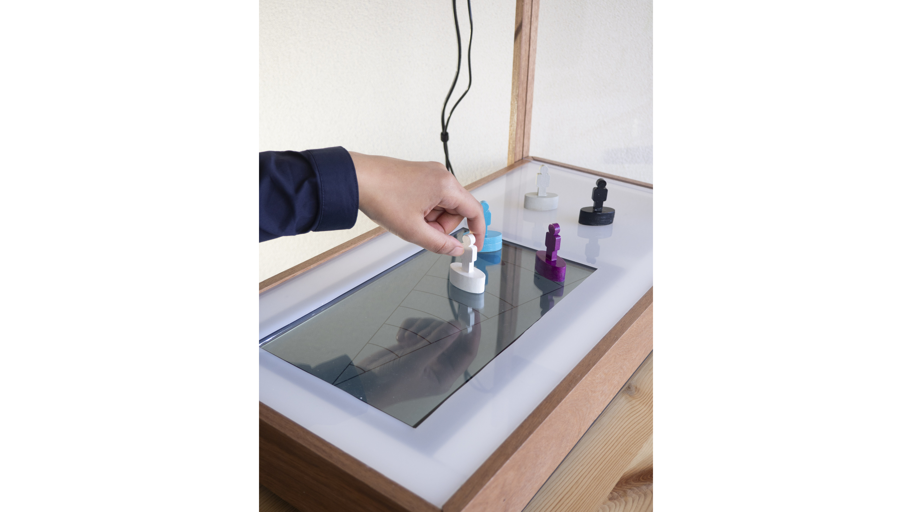

July 2019

Hoe kan design een moreel besluitvormingsproces van individuen en organisaties ondersteunen in een specifieke wicked problem casus?
Others Eyes is een hulpmiddel om de verschillende perspectieven op een probleem te verkennen. Ten eerste, wordt een persoon zich bewust van haar/zijn perspectieven door het plaatsen van karakters op het Perceptionboard wat verschillende visies op de betreffende probleemcasus creërt. Pas na dit proces kan rekening worden gehouden met de percepties van anderen. Deze aanpak leidt tot een beter begrip en een rijkere dialoog tussen professionals.
Door de verrijkte perceptie van alle deelnemers wordt een meer samenhangende beslissing genomen die recht doet aan allen die bij deze zaak betrokken zijn.
Others Eyes ondersteunt de leider binnen een coalitie van samenwerkende organisaties die werken aan ongetemde problemen (wicked problems) en ondersteunt professionals tijdens het morele besluitvormingsproces binnen een complexe organisatorische omgeving.